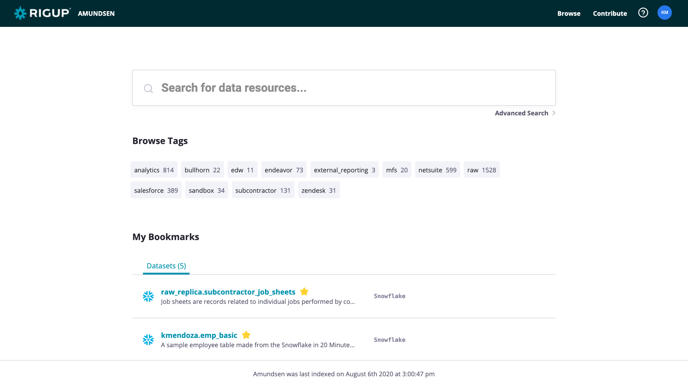
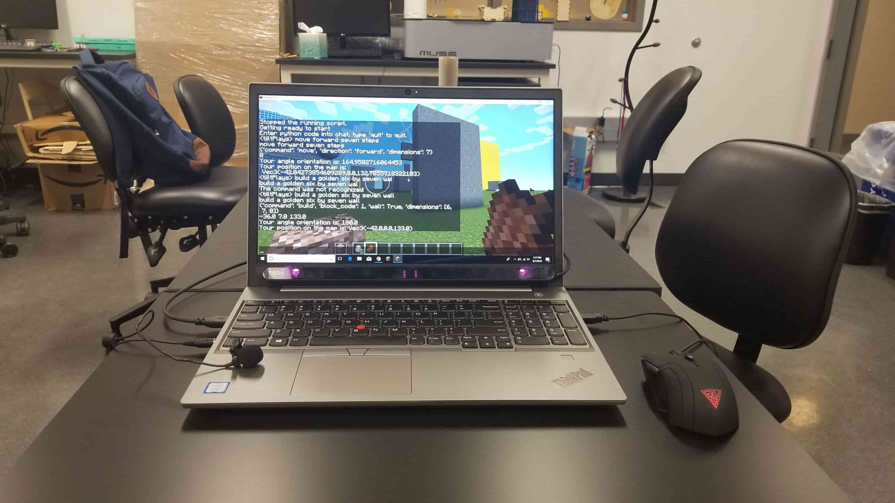
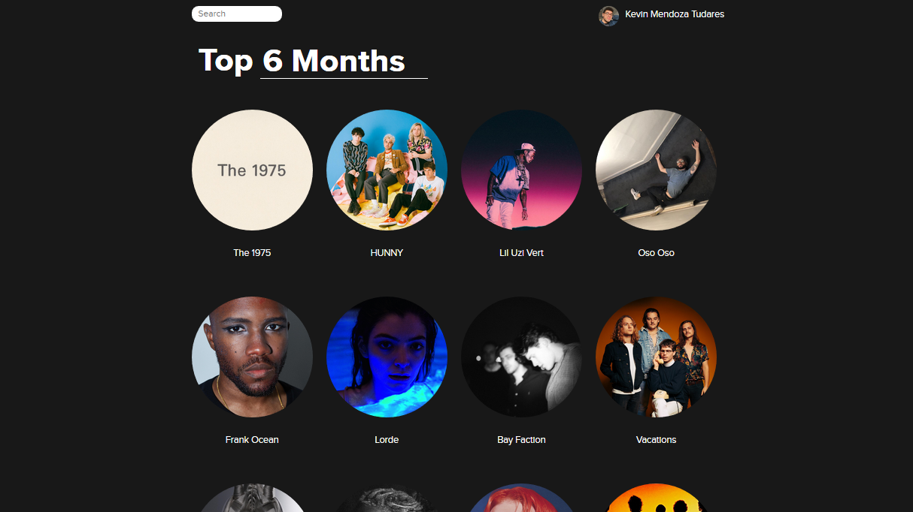
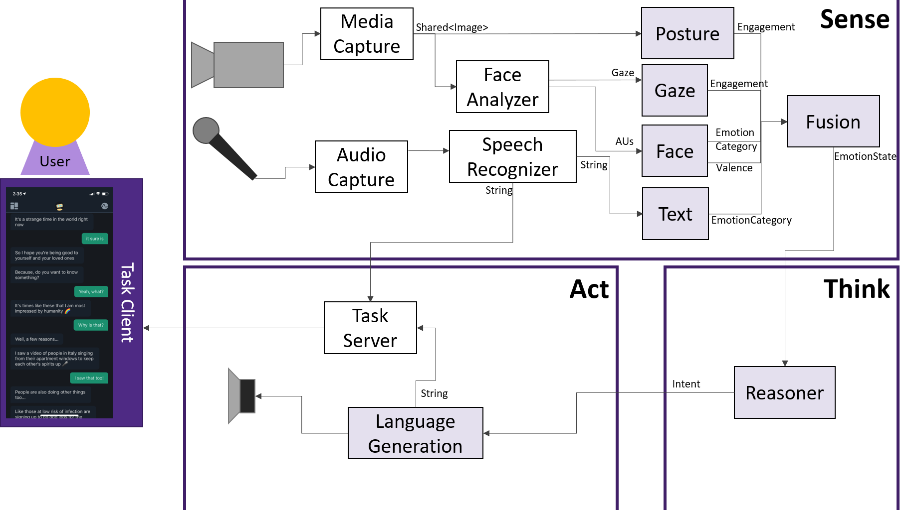
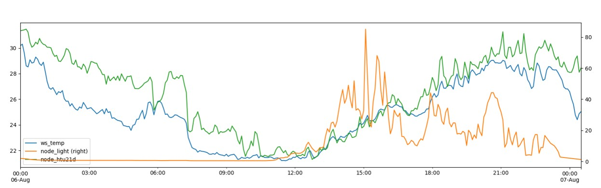
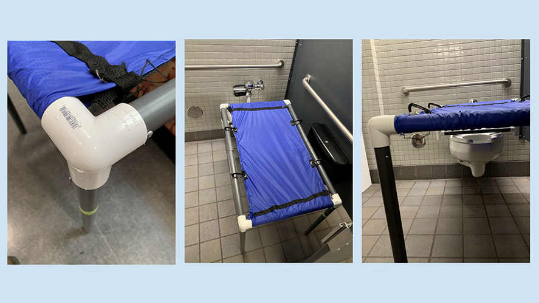

About
I am a student and researcher at Northwestern
University as a QuestBridge Match Scholar.
Previously, I was a part of the Array of Things group at
Argonne National Laboratory. My principal investigator was
Pete Beckman,
and I worked on time-series database solutions and machine learning sensor
calibration for IoT devices.
I was recently a Software Engineering intern on the Data Engineering team at RigUp, where I developed a data catalog platform
for the BI team.
This coming summer (2021), I will be a Software Engineer intern at Tableau Software.
My interests span databases and data science, data security, cloud and ubiquitous computing, and
user-centered design. I am movitated by empowering people with data and software.
Currently, I am pursuing a Bachelor of Science in Computer Science from Northwestern University,
exploring NU's research areas of
systems
and networking,
security
and privacy, and
human-computer
interaction.
I am also currently affiliated with the Technological
Innovations for Inclusive Learning and Teaching lab at NU, where I am developing
natural multimodal interfaces to allow real-time gaze and voice interaction in Minecraft for the purpose
of promoting equitable fun and learning.
I have also been an undergraduate teaching assistant for a couple of courses:
I really like video games, command-line interfaces, trains and subways, Python, Java and C# (working on
mastering C++), learning, indie music, traveling, cellos, exploring, art and history museums, and
teaching.
Thanks for visiting! Below are a few projects I've worked on. Feel free to check them out.
Recent Projects

Amundsen
With the Data Engineering team at RigUp, I developed a data
catalog and its infrastructure to boost productivity and insights for RigUp's analysts.
This project utilized Lyft's open source Amundsen
platform,
GCP, Snowflake,
Tableau, Flask,
React, Docker, and K8s.

Multicraft
With Marcelo Worsley at TIILT, I developed Gaze and
Voice interfaces using Java (Minecraft server plugins), Python (natural language
processing), and C# (eye tracking) to facilitate accessible and equitable gameplay in
Minecraft. You can view the current repository here.

Spotimy
As an ongoing personal project, I'm developing a web app using React to access Spotify's Web API.
The app is designed to allow the user to explore their library as well as top
artists and songs to visualize their musical data.
If you have a Spotify account, you can try it out for yourself here.

psiAssistiveAgent
With Jason Wilson in
NU's
Affective Computing course, I developed a component of an affective agent to
train volunteers for emotional support services.
The component approximates emotions from facial expressions using OpenFace, and the agent builds
on Microsoft's \psi framework.

Environmental Data Time Series Analysis
With Pete Beckman at ANL, I implemented
a new
PostgreSQL database and infrastructure to manage
time-series environmental data maintained by the AoT research group.
I then used the data for developing a sensor calibration model combining supervised and
unsupervised ML models.

DuraCot
As a group in NU's DTC
course, we designed a portable changing table to facilitate changing of a 9-year old with
cerebral palsy. The device allows the caretaker to change the child within the privacy of a
handicap stall. The design recieved recognition
from the Segal Design Institute.